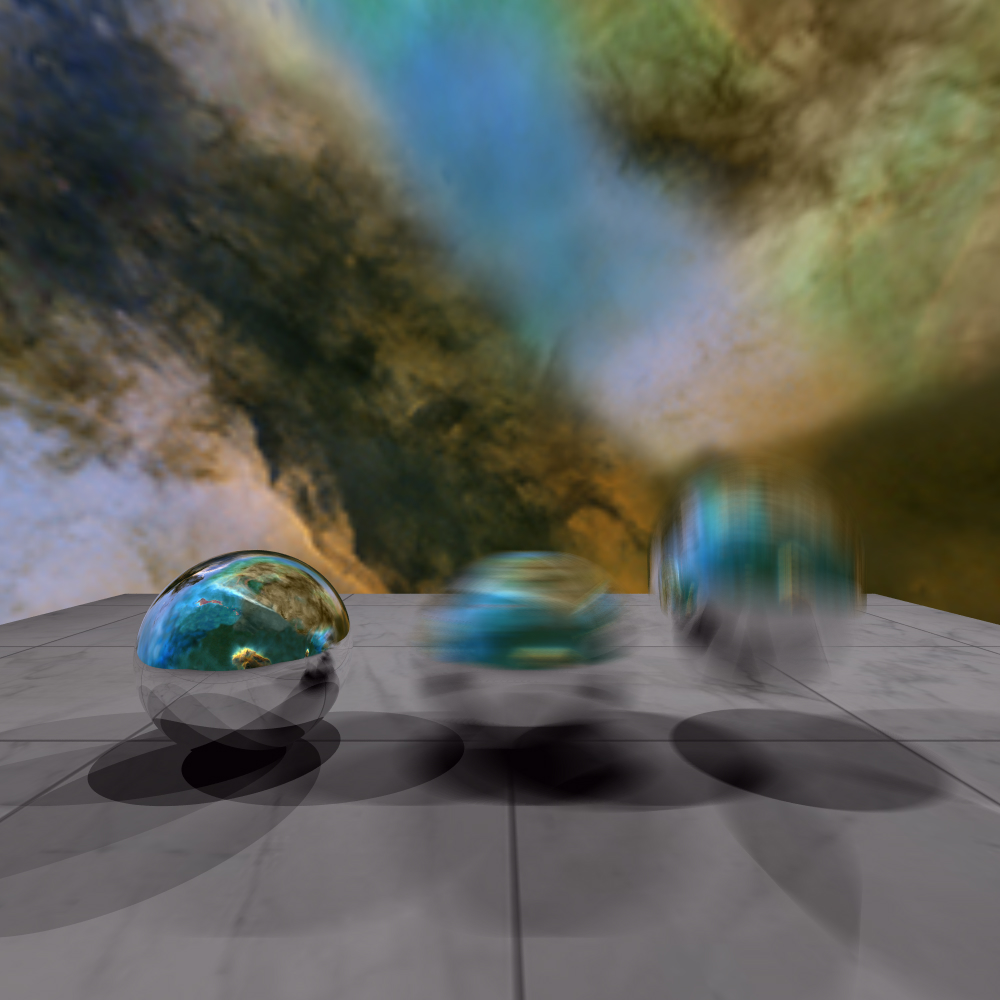

|
Project 10: Distributed Ray Tracing Tushar T. |
|
[ Click here to download the executables for all tasks ] |
 Glossy Spheres and Translucent OBJ Dodecahedron. You can see the rough reflections on the spheres; and the moon sphere and the floor partially through the dodecaherdron. |
 Depth of field demonstration. |
|
 Motion Blur applied to middle (horizontal motion) and right spheres (vertical motion) |
|
[ All asset files are included in the link at the top ] |